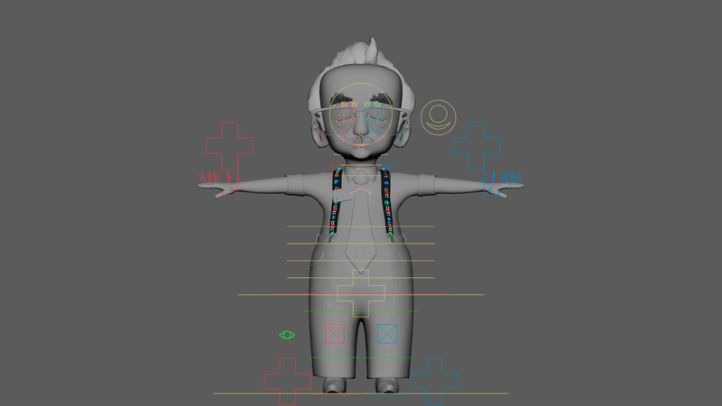

01 / Project detail
Student Accomplice
Student Accomplice is an animated short created by a team of students at Brigham Young University's Center for Animation. The film follows a student driver whose driving test takes an unexpected turn when a bank robber commandeers the car.
I worked on the film as part of a three-person rigging team, with my primary focus on character rigging and developing tools to make the rigging process faster and more reusable across the production. The project gave me the opportunity to take a character from rig development through production while working directly with animators and adapting the rig based on their feedback.
Ed Character Rig

My primary character responsibility was Ed, the driving instructor. I built and maintained his character rig, including the controls and deformation systems needed by the animation team.
Working on a production character taught me that a successful rig is about more than getting the character to move correctly. The rig needed to be intuitive for animators, hold up across the poses required by the film, and continue evolving as new animation needs appeared.
Throughout production, I worked with animators to troubleshoot issues, respond to feedback, and improve the rig as it was used in shots.
Procedural Arm Rigging Tool

Alongside character rigging, I developed a Python-based arm rigging tool for Maya to automate repetitive parts of our rigging workflow.
The tool generates the underlying systems for an arm rig, including IK/FK functionality, finger controls, roll joints, follow systems, and supporting rig structures. Instead of rebuilding these components manually for every character, the script allowed the team to generate a consistent starting point and focus more of our time on character-specific problems and deformation.
Developing this tool pushed my interests beyond individual character rigs and toward technical art, tools, and pipeline development: looking for repeated problems in an artist workflow and finding ways to solve them through code.
See the repository README for a full breakdown of the tool and an explanation of how it works.
View GitHub repository
Stretchy Suspenders
Ed's costume presented another rigging challenge: his suspenders needed to remain attached to his body while stretching and responding naturally as he moved.
I developed a custom stretchy suspender rig that gave the suspenders the flexibility required by animation while maintaining their relationship to the character.
It was a small part of the finished character, but one of my favorite technical challenges on the film. It required finding a solution specifically for the needs of the design rather than relying on a standard character-rigging setup.
Working in Production
Student Accomplice was my first opportunity to experience character rigging as part of a larger collaborative animation pipeline. My work had to function not only in my own Maya scene, but also for the animators using the characters and within the technical requirements of the film as a whole.
That experience shaped the way I approach technical art today. I became especially interested in the space between artists and technology: building reliable systems, listening to the people who use them, and developing tools that make the creative process easier.
Recognition
Student Accomplice went on to receive international recognition, including:
- College Television Award - Animation, 44th College Television Awards
- Bronze - Animation, 2024 Student Academy Awards
- Film of the Year - 3D Animation, 2024 Rookie Awards
- People's Choice Award, 2024 Rookie Awards
- Visual Effects Society Award Nominee, 23rd Annual VES Awards
The film's recognition was an incredible conclusion to a project built through the collaboration of students across animation, computer science, design, music, and other disciplines.